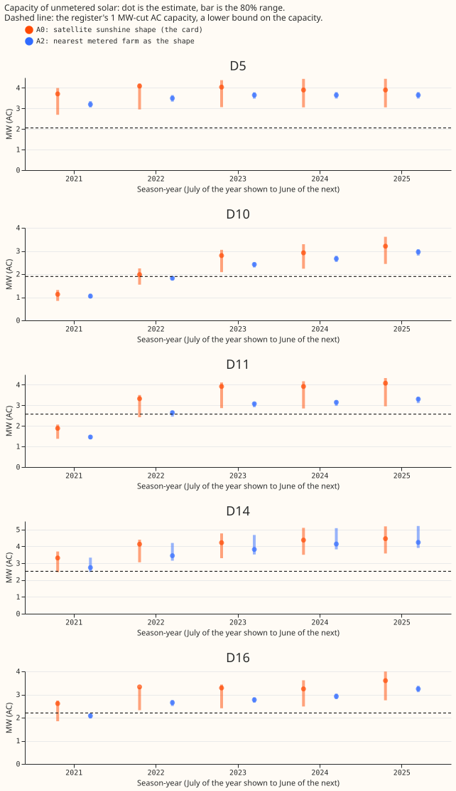

Unmetered solar capacity at two Primary substations falls below the Feed-in Tariff register in 2021
Take-home message: the 2021 shortfall at D10 and D11 is not a missing correction and not a thin fit window, and a nearby metered farm's output makes the shortfall worse. The card's capacity estimate is already divided by the recovery of the metered farms, so a further division changes it by under 3%. Every Primary has 12 months of data in the 2021 season-year. The nearest-farm shape lowers the 2021 estimate by 7% at D10 and 22% at D11, so the upper end of the 80% range stays below the register floor at both Primaries. The fall is partly a mismatch between the divisors of the two shapes, so it does not show that the nearest-farm shape is worse.
What was asked. Each Primary substation card (D5, D10, D11, D14, and D16 are anonymised labels) shows the capacity of unmetered solar panels behind the substation, inferred from its power readings, in megawatts of alternating-current (AC) output. A season-year runs from July of the year shown to June of the next. For the 2021 season-year, the estimate is 1.1 MW at D10 and 1.9 MW at D11. The Feed-in Tariff register (the UK subsidy scheme's list of small installations) lists 1.9 MW and 2.6 MW of AC capacity at sites of at most 1 MW in the two Primaries' postcode districts. The register is partial, so we use that capacity as a lower bound, the register floor. A recovery is the share of a metered solar farm's output that the capacity fit finds again after we add that output to a Primary's readings (an injected farm).
The arms. The decision rule reads the 80% range of each estimate, from a bootstrap over resampled months.
- A0: the card's estimate (experiment 129, fit with an increment penalty of 0.1 and satellite irradiance as the sunshine shape).
- A1: A0 divided by the median recovery of the other metered farms (experiment 241).
- A2: the same fit with the recorded output of the nearest metered farm within 25 km as the sunshine shape, divided by the median recovery under that shape (experiment 238).
- A3: A2 with the number of fitted months per season-year printed and a "thin" mark under 6 months, which no season-year reaches. The fitted months are the same for A0.
All arms are offline checks and score no forecast.

Figure 1. At D10 and D11 the 2021 range of the card's estimate (orange) lies below the register floor (dashed line), and the nearest-farm shape (blue) lowers the estimates.
Findings
- A1, the division by the recovery, equals the card's estimate. The card's capacity estimate is already divided by the Primary's median recovery over the matched farms, which is 0.77 to 0.86 over the Primaries and season-years. Experiment 241's leave-one-farm-out divisor differs from that divisor by at most 0.02. The two estimates differ by at most 3% (D16 2022: 3.25 MW against 3.33 MW). The median absolute error of a held-out farm under the card's fit is 0.063 of the injected capacity.
- Dividing by the recovery a second time overcorrects. The result is 1.39 MW at D10 and 2.39 MW at D11 in 2021, which are the lifts the plan predicted. The second division corrects the same bias twice and would overstate capacity by about 25%. The upper ends of that range (1.62 MW and 2.62 MW) are still below the AC floor at D10 (1.90 MW) and, at D11, between the AC floor (2.57 MW) and the direct-current (DC) floor (2.78 MW).
- A3, the thin-window rule, never fires, but the early data have a gap the rule cannot see. Season-year 2021 has 12 calendar months and 16,390 to 16,608 training half-hours (of 17,520) at every Primary (D10's rows start on 19 July, about 11.4 months). Season-years 2022 to 2025 have 15,212 to 17,568 half-hours. D10 has 5,424 half-hours in 2019 (from December) and D11 has 9,002 (from September), and neither has any in season-year 2020. The 2021 capacity is the sum of increments from 2019 onward, so it spans a gap of about 20 months that a count of months within 2021 does not show. The register's last entry (24 March 2021, from experiment 215) falls before season-year 2021 starts, so the estimate is below the capacity the register lists as installed in the district.
- A2, the nearest-farm shape, lowers every 2021 estimate, partly through a different divisor. The nearest farm to each Primary is 3.1 km (D5), 7.7 km (D10), 23.1 km (D11), 5.3 km (D14), and 5.8 km (D16) away, so a metered farm lies within 25 km of all five. Against A0 in 2021, A2 gives 1.04 MW at D10 (a fall of 7%), 1.46 MW at D11 (22%), 2.74 MW at D14 (17%), 2.08 MW at D16 (20%), and 3.20 MW at D5 (14%). The prediction of a change under 10% at D5, D14, and D16 failed. In 2021 the A2 estimate is the card's times 0.93 (D10), 0.78 (D11), 0.83 (D14), 0.80 (D16), and 0.86 (D5). That ratio is the ratio of the raw fitted capacities (1.00, 0.86, 0.83, 0.93, and 0.99) times the ratio of the divisors (1.08, 1.11, 1.00, 1.17, and 1.14). At D10 the raw capacities agree, so the whole 7% fall at D10 comes from the divisor. A2's divisor is one number per Primary from a fit without the increment penalty, read at season-year 2024, and the card's divisor is per season-year from the penalised fit, so the two are not comparable. D11's reference farm is 23.1 km away, near the 25 km limit.
- The card's estimate clears the AC floor in 23 of 25 Primary season-years. The check is whether the upper end of the 80% range reaches the floor. A0 misses D10 2021 (1.31 MW against 1.90 MW) and D11 2021 (2.07 MW against 2.57 MW). A2 clears the AC floor in 22 of 25: it misses D10 2021, D11 2021, and D16 2021 (2.18 MW against 2.20 MW), and ties at D10 2022 (1.90 MW). Against the DC floor, A0 misses the same two season-years and A2 misses five.
- No arm met the decision rule. The rule asks for the upper end to reach the floor at all five Primaries in every season-year with register coverage, and for the estimate to stay within 10% of A0 at the Primaries with no shortfall. A0 and A2 both fail at D10 and D11. A2 also moves D5, D14, and D16 by 14%, 17%, and 20% in 2021. Three of five Primaries (D5, D14, and D16) clear the AC floor in every season-year under A0, as predicted, and two of five (D5 and D14) under A2.
- The increment penalty does not cause the low 2021 level. Experiment 129's arm 2, which has no increment penalty, gives 0.82 MW at D10 and 1.38 MW at D11 in 2021, no higher than the card.
- The fitted capacity rises about 75% between 2021 and 2022 at D10 (1.13 to 1.98 MW) and at D11 (1.88 to 3.32 MW). That rise is consistent with a 2021 level that is too low (for example from the data gap above), and equally with real installations during 2021 and 2022.
- The A2 known-answer check passes at 4 of 5 Primaries. The median absolute error of a held-out injected farm under the nearest-farm shape is 2% of its capacity at D10, 2% at D11, 13% at D14, 4% at D16, and 6% at D5, with 2 to 4 injected farms per Primary. D14 misses the 10% bound.
Checks
- Reproduction: refitting the satellite shape with the card's settings reproduces the stored raw capacity of every Primary and season-year to within 1e-6, as the script asserts.
- A1 covers 2021 to 2024: experiment 241 has no 2025 recoveries, and the A1 divisor pools the injected fractions of 20%, 50%, and 100% without a cloud-driven load.
- Audit triggers (the seven triggers in the
ml-experimentskill's "Audit before merge"): trigger 2 fires, because the result contradicts the prediction. The two predicted causes were tested (the division and the fit window). The fall in the estimate under A2 is attributed to the higher recovery under that shape and was not tested further. No Opus audit was run, because the maintainer's rule is Sonnet by default and the conclusion is a null result. One Sonnet reviewer read the code and numbers, and one read the prose.
Limits
- The register lists installations by postcode district, and the page assigns part of each district's capacity to each Primary. A shortfall at D10 and D11 may mean the register over-states the Primary's share.
- The A2 range uses 2 to 4 injected farms, so it is narrow and not a calibrated 80% interval (experiment 241). The point estimate divides by the median recovery of the injected farms and the range by every farm's recoveries, so the range is not centred on the point (D14's recoveries span 0.66 to 0.87).
- The A2 divisors come from experiment 238's injection fits, which use no increment penalty and data to 2026-07-01, and read the recovery at the 2024 season-year. The card's fit uses the penalty and data to 2026-07-31, as experiment 129's real-series fit did.
- A neighbouring farm's output carries plant effects as well as sunshine (panel tilt, panel orientation, curtailment, and soiling; experiment 238).
What the next experiment should answer
- Does the register's district share over-state D10 and D11 in 2021? Compare the register's postcode districts with the Primaries' supply areas. The prediction that could fail is a share above 70% of each district's listed capacity at both Primaries.
- Does the 2019 data drive the 2021 level? Refit the card's estimate on rows from July 2021 only, and compare the 2021 level. The prediction that could fail is a 2021 estimate at D10 and D11 within 10% of the card's.
- Does a floor constraint hurt the fit? Fit season-year 2021 with the capacity at least the register's AC capacity, and compare the fit's squared error on 2021 half-hours with the free fit. The prediction that could fail is a rise in error of under 1%, which would mean the readings cannot rule the floor out.